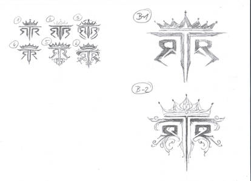

### DUNGEON PAUSE
Notes:
"Dungeon Pause start 360-370, resume ~470 (goal 500). Some say only worth after 439."
This bugged me for a while. Only ~35 players are 450+, so I dug into GER sources & data.
My theory/recommendation:
Dungeon Pause = min/max trick: since dungeons are limited, you stop doing them for a while.
When you resume, rewards (xp/gold/items) are higher and you can blast through many at once.
My approach: take SHORT pauses, assess. If I could redo: check dungeons—top right shows
floors, some marked EPIC (chance or guarantee idk). I’d time those to line up so I get
a set of epics together, instead of wasting them at low lvls where gear is replaced fast.
Don’t pause too long early—waiting hurts when gear is outdated in days. Mushrooms/login
habits also change things.
Twister Dungeon (tested on alts, class matters) if you end a floor w/90% HP you can push
next free (no shroom/cd) - lower levels you'd benefit more from pausing that - obviously
how good your class is in dungeons matters
Other advice: keep doing some shadow/light. I’ve seen “Light 22” + “Shadow 15”
mentioned (they’re 2nd to last water/shadow pet unlocks). Some players just keep
pushing all shadows anyway for pet berries/comp gear.
## DUNGEONPAUSE(unedited)
What the fuck EVEN IS that?
A strategy developed by the sweaty min/maxers over the years to get the sbsolute most out
of the dungeond in this game(since there are only so much, then thats it!) Maybe you've
noticed, if not, take a look next time your dungeoning. Up where it shows the enemy
some will have an }EPIC{ indicating fat loots is acquired - - so - heres my normal
standard procedure that i always end up doong with everything
- find thing, want to learn about thing
- read about thing, read about things about the thing
- find many sources, attempt to gusge validity of sources
- get a PhD in the thing
- understand it at such depth - that i don't know who i am anymore
- learn so much that THAT I ALMOST ALWAYS end up back near-- what feels like
where i began, remember that most answers to things, and the things that seem
to work best for **ME** is simplicity.
anyways - after translating a bunch of German (it is a german game, don't know why i
was surprised a large amount of this kind of technical knowleege is in GER)
AFTER ALL THAT
heres what i wrote down,
"Dungeon Pause starting at 360-370 ending at 470(goal to get to 500)
Only benefit after lv 439
Can Complete Dungeons: Light 22;Shadow 15"
Really the the idea is you delay dungeons and when you resume you not only instantly
(upon spamming mushrooms to compelte a bunch of dungeons) instantly gain a ton of levels
gear and the othe drops from dungeons (gold?)
Now all this aside . . .
## The More Interesting Part . .
At least, for me. Is Thinking about dungeons with the epic item drops(usually bosses at
end but may be some in middle or whatever) but since we know the higher level you are-
the better stats on gear get dropped(and is why +5 improved item quality on gear is a must)
you could optimize this at lower levels as well without much thought. If your way lower-
i wouldn't give much thought to it as you're probably still outgrowing gear at such a
rapid pace. But at mid to higher levels, absolutely keep an eye on those epic drops and
maybe fight through a few different dungeons, lining multiple epic drops up so when you level
a few times-- or just want to get new gear- you can complete multiple at a time and hopefully
upgrade some gear pieces.
Anyways knowing all classes perform differently - i still think not a lot of people on this
sever are dungeon pausing - not sure why it's pretty common knowledge. It's also very possible
this was just a dream i had. Anyways i think the idea is that if you pause your character -
lets say at lv 400 would be stronger than your character at 400 if you didnt pause. And i'm
just judging that based on the fact i doubt people are doing this for absolutely no reason.
Currently pulling my hair out a bit from thinking, i do that when i write. You can always
tell when i've recently written a good song because i'll be missing half an eyebrow
(which i am literally missing some eyebrow now as i type this lol)
My skate buddy neighbor actually MAKES FUCKING WEBSITES. I keep telling him imma need
one and i think he thinks/thought i was joking. I do wanna turn this into something but
it will probably be slow rolling - as i'll likely end up learning/doing most of it
myself(like i always do)
NOW FOR MY NEXT TRICK. lets see if i can put a fucking picture
I mean, how hard could that be?
Heres some art from our member BlueBerryPanini who made some renditions of a lame
logo for me
Check out her stuff she's hella talented>
https://www.deviantart.com/blueberrypanini
